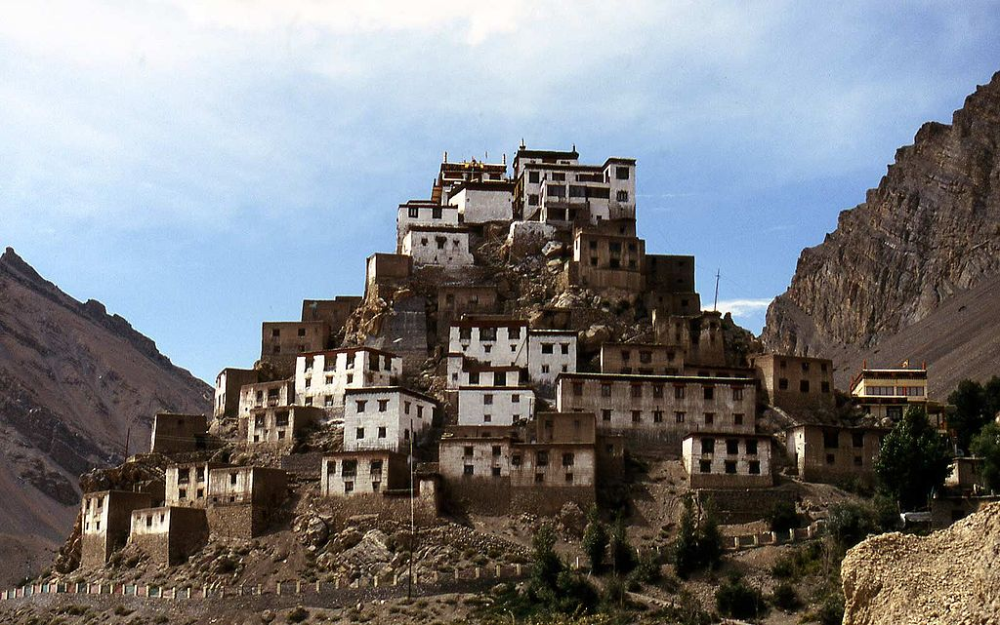
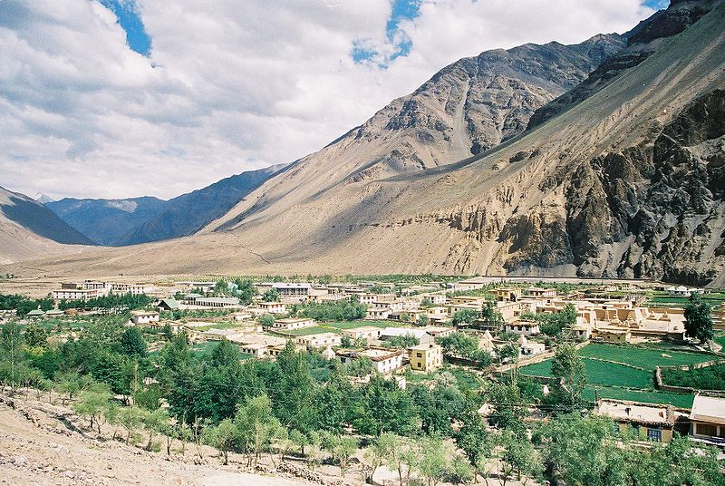

Key Gompa
Kye Gompa (also spelled Ki, Key or Kee - pronounced like English key) is a Tibetan Buddhist monastery located on top of a hill at an altitude of 4,166 metres (13,668 ft) above sea level, close to the Spiti River, in the Spiti Valley of Himachal Pradesh, Lahaul and Spiti district, India. It is the biggest monastery of Spiti Valley and a religious training centre for Lamas. It reportedly had 100 monks in 1855.
Kye Gompa is said to have been founded by Dromtön (Brom-ston, 1008-1064 CE), a pupil of the famous teacher, Atisha, in the 11th century. This may however, refer to a now destroyed Kadampa monastery at the nearby village of Rangrik, which was probably destroyed in the 14th century when the Sakya sect rose to power with Mongol assistance. Kye was attacked again by the Mongols during the 17th century, during the reign of the Fifth Dalai Lama, and became a Gelugpa establishment. In 1830, it was sacked again during the wars between Ladakh and Kulu. In 1841, it was severely damaged by the Dogra army under Ghulam Khan[disambiguation needed] and Rahim Khan[disambiguation needed]. Later that same year, it suffered more damage from a Sikh army. In the 1840s, it was ravaged by fire and, in 1975, a violent earthquake caused further damage which was repaired with the help of the Archaeological Survey of India and the State Public Works Department.
Tabo Monastery
Tabo Monastery (or Tabo Chos-Khor Monastery) is located in the Tabo village of Spiti Valley, Himachal Pradesh, northern India. It was founded in 996 CE in the Tibetan year of the Fire Ape. by the Tibetan Buddhist lotsawa (translator), Rinchen Zangpo (Mahauru Ramabhadra), the king of western Himalayan Kingdom of Guge. Tabo is noted for being the oldest continuously operating Buddhist enclave in both India and the Himalayas. A large number of frescoes displayed on its walls depict tales from the Buddhist pantheon. There are many priceless collections of thankas (scroll paintings), manuscripts, well-preserved statues, frescos and extensive murals which cover almost every wall.
The monastery was built by the Buddhist king (also known as Royal Lama) Yeshe-Ö in 996 A.D. It was renovated 46 years later by the royal priest Jangchub O'd, the grandnephew of Yeshe-Ö. They were kings of the Purang-Guge kingdom whose ancestry is traced to the ancient Tibetan monarchy, and extended their kingdom from Ladakh to Mustang by building a large network of trade routes, and built temples along the route. Tabo was built as a 'daughter' monastery of the Tholing Monastery in Ngari, western Tibet. This royal dynasty was instrumental in re-introducing the Indian Mahayana Buddhism in Tibet, the second major spreading of Buddhism in Tibetan history. They contributed richly to the political, religious and economic institutions of Tibet in the 11th century through the building of Tabo Monastery; this is documented in the writing on the walls of Tabo. The iconographic depictions are reported to be of 1042 and later, consisting of paintings, sculptures, inscriptions and extensive wall texts. The translator Rinchen Zangpo, a Tibetan lama from western Tibet, who was chiefly responsible for translating Sanskrit Buddhist texts into Tibetan, was the preceptor to King Yeshe-Ö who helped in the missionary activities. Several Indian pundits visited Tabo to learn the Tibetan language.
Chandra Lake
Chandra Taal (meaning the Lake of the Moon), or Chandra Tal is situated in the Spiti part of the Lahul and Spiti district of Himachal Pradesh (India). The name of the lake originates from its crescent shape. It is situated at an altitude of about 4,300 metres (14,100 ft) in the Himalayas. Mountains of scree overlook the lake on one side, and a magnificent cirque presents a view on the other. Chandra Taal is a popular destination for trekkers and campers. The lake is accessible on foot from Batal as well as from Kunzum Pass from late May to early October.

There is also a motorable road available till a parking made 2km before the lake. Stay options are available 5km before the lake on prebooking. The road from Kunzum Pass is accessible only on foot, and it is about 8 km (5.0 mi) from Chandra Taal. Suraj Tal is also accessible Chandra Taal, 30 km (19 mi) away. Vast meadows on the banks of the lake are the camping sites. During springtime, these meadows are carpeted with hundreds of kinds of wildflowers. The lake is situated on the Samudra Tapu plateau, which overlooks the Chandra River. The lake is one of two high-altitude wetlands of India which have been designated as Ramsar sites. Chandra Taal offers magnificent view at night (after sunset). While temperature drops below Zero degree celsius during pre-winter, the sky is filled count-less stars & offers Spectacular Milky way view.